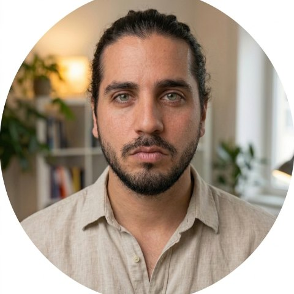

Ingeniero industrial · IA · Energía solarIndustrial engineer · AI · Solar

Patricio Abarca
Trabajo con plantas solares de gran escala y construyo software con IA: desde análisis de rendimiento hasta apps que la gente usa a diario.I work with utility-scale solar plants and build AI-powered software, from performance analytics to apps people use every day.
Brisbane, AustraliaMáster en IA · La Trobe UniversityMaster of AI · La Trobe UniversityES / EN
Curva de un día solarOne solar daykW · 06:00–18:00
Mi trabajo diario: medir cuánta energía rinde una planta frente a lo esperado. Lo demás lo construyo en las horas que quedan.My day job: measuring how much energy a plant delivers against expectation. Everything else gets built in the hours left over.
Nueve productos hechos de principio a fin, del diseño al despliegue. Algunos ya tienen usuarios; otros están en camino.Nine products built end to end, from design to deployment. Some already have users; others are on their way.
Sobre míAbout
Energía y softwareEnergy and software
BaseBased in
Brisbane, Australia
FormaciónEducation
Ingeniería Industrial · Máster en IA (La Trobe, en curso) · Data Science & AI (Institute of Data, UTS)Industrial Engineering · Master of AI (La Trobe, in progress) · Data Science & AI (Institute of Data, UTS)
EnfoqueFocus
Operación y rendimiento solar, análisis de datos, IA aplicadaSolar operations and performance, data analysis, applied AI
IdiomasLanguages
Español e inglésSpanish and English
Trabajo entre dos mundos que rara vez se juntan: la operación de plantas solares de gran escala y el software que hace que su rendimiento se pueda medir y defender. Construyo plataformas de análisis que toman datos en vivo y los convierten en los números con los que opera el negocio.
Fuera de eso, uso la IA para construir productos completos de principio a fin. También hago fotografía, que me enseña a mirar patrones, luz y lo que de verdad hay.
I work between two worlds that rarely meet: the operation of utility-scale solar plants, and the software that makes their performance measurable and defensible. I build analytics platforms that take live data and turn it into the numbers the business runs on.
Beyond that, I use AI to build complete products end to end. I also do photography, which keeps teaching me to look at patterns, light, and what's actually there.